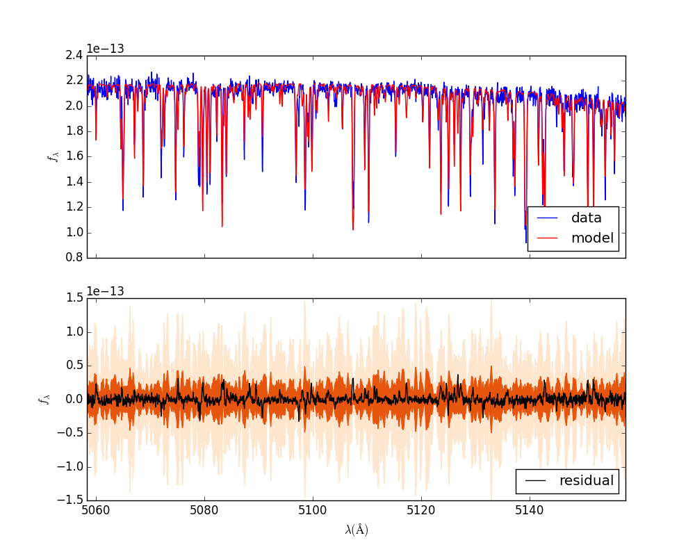
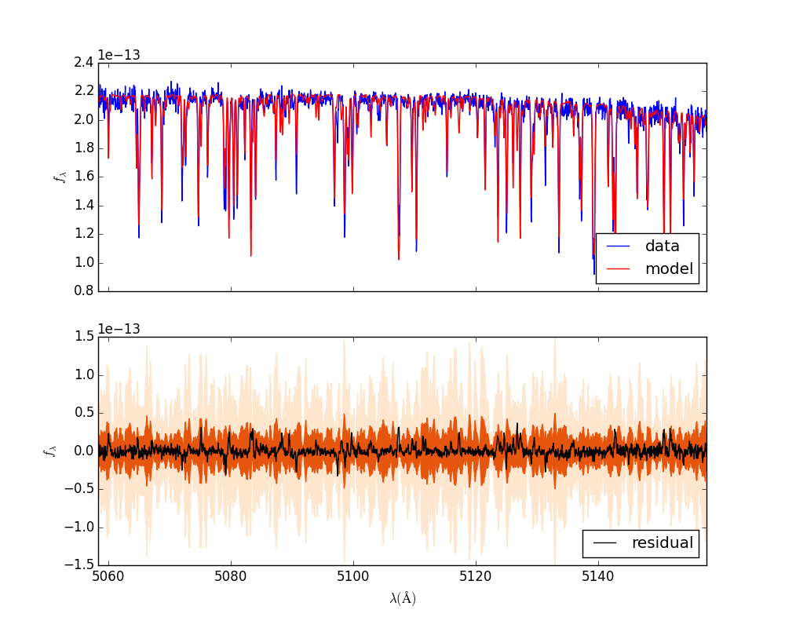

Example: WASP 14 Sampling¶
Preamble¶
In this example we will actually perform MCMC sampling with the WASP14 data and stellar synthetic spectral model. This example assumes you have already completed the two previous examples.
Optimize¶
The first step is to iteratively run an optimization on the \(\Theta\) and \(\phi_{P}\) parameters.
$ star.py --optimize=Theta
keeping grid as is
grid pars are [ 6.10000000e+03 4.29000000e+00 -2.60000000e-01]
grid:[ 6.10000000e+03 4.29000000e+00 -2.60000000e-01] vz:-4.77 vsini:5.79 logOmega:-12.7 Av:0.0 lnp: 68337.603736
grid pars are [ 6.40500000e+03 4.29000000e+00 -2.60000000e-01]
grid:[ 6.40500000e+03 4.29000000e+00 -2.60000000e-01] vz:-4.77 vsini:5.79 logOmega:-12.7 Av:0.0 lnp: -inf
grid pars are [ 6.10000000e+03 4.50450000e+00 -2.60000000e-01]
grid:[ 6.10000000e+03 4.50450000e+00 -2.60000000e-01] vz:-4.77 vsini:5.79 logOmega:-12.7 Av:0.0 lnp: 68279.8923689
[...]
Optimization terminated successfully.
Current function value: -69616.518919
Iterations: 1333
Function evaluations: 2074
[ 6.30000000e+03 4.19568653e+00 -3.10099805e-01 -4.75122506e+00
6.69353314e+00 -1.26949259e+01]
The code spits out some information about the optimization, with \(\ln{p}\) increasing for convergence. This process is computationally intensive. It saves a file theta.json with the best fit parameters.
$ ls -t | head -n 2
log.log
theta.json
If you want, you can spot-check the optimization by generating residual plots again. Otherwise, the next step is to optimize the \(\phi_{P}\). This does not take as long.
$ star.py --optimize=Cheb
keeping grid as is
grid pars are [ 6.30000000e+03 4.19000000e+00 -3.10000000e-01]
21 [ 0. 0. 0. 0.] 69616.4682918
21 [ 0.00025 0. 0. 0. ] 69614.5115122
21 [ 0. 0.00025 0. 0. ] 69607.5534798
21 [ 0. 0. 0.00025 0. ] 69602.4729821
21 [ 0. 0. 0. 0.00025] 69621.2714096
21 [ 0.000125 0.000125 -0.00025 0.000125] 69627.2303859
21 [ 0.0001875 0.0001875 -0.0005 0.0001875] 69638.1985919
21 [ 0.00021875 -0.00015625 -0.00025 0.00021875] 69637.4464359
21 [ -4.68750000e-05 1.56250000e-05 -3.75000000e-04 3.28125000e-04] 69642.6705253
21 [ -1.95312500e-04 2.34375000e-05 -5.62500000e-04 4.92187500e-04] 69655.4960311
21 [ 1.05468750e-04 2.73437500e-05 -6.56250000e-04 5.74218750e-04] 69659.6974336
[...]
21 [-0.00440223 -0.0182905 -0.0186727 -0.00466996] 70403.8324541
Optimization terminated successfully.
Current function value: -70403.832469
Iterations: 123
Function evaluations: 214
21 [-0.00440322 -0.01828718 -0.01867513 -0.00466447]
$ ls -t | head -n 1
s0_o21phi.json
The code currently seems to have a bug: when a single order is optimized as shown above, the phi.json is incorrectly updated to flip fix_c0 = false. There should only be 3 polynomial terms in this case, but instead 4 terms are shown. I am not sure the origin of this problem. Notably, it goes away when you run the code on multiple spectral orders.
Setting up an MCMC run¶
Once you have your config.yaml file and *phi.json files to a pretty close fit, the next step is to perform MCMC sampling. But before we do that, we must change directories to the “run number”. The reason is that you probably want to re-run the chains with different starting values to make sure you have converged on a unique solution. Besides, you might want to experiment by tweaking some other parameter and seeing how your results change (like turning on or off the local or global covariance kernels). So you have to hand edit the file paths in your config.yaml file.
$ cd output/example_wasp14/run01/
$ cp ../../../s0_o21phi.json .
$ mkdir plots
$ cat config.yaml
# YAML configuration script
name: example_wasp14
data:
grid_name: "PHOENIX"
files: ["../../../data/WASP14/WASP14-2009-06-14.hdf5"]
# data/WASP14/WASP14-2010-03-29.hdf5
# data/WASP14/WASP14-2010-04-24.hdf5
instruments : ["TRES"]
orders: [21]
#orders: [20, 21, 22, 23, 24, 25, 26, 27, 28, 29, 30, 31, 32, 33, 34, 35, 36]
outdir : output/
plotdir : plots/
# The parameters defining your raw spectral library live here.
grid:
raw_path: "/Users/gully/GitHub/Starfish/libraries/raw/PHOENIX/"
hdf5_path: "../../../libraries/PHOENIX_TRES_test.hdf5"
parname: ["temp", "logg", "Z"]
key_name: "t{0:.0f}g{1:.1f}z{2:.1f}" # Specifies how the params are stored
# in the HDF5 file
parrange: [[6000, 6300], [4.0, 5.0], [-1.0, 0.0]]
wl_range: [5000, 5200]
buffer: 50. # AA
PCA:
path : "../../../PHOENIX_TRES_PCA.hdf5"
threshold: 0.999 # Percentage of variance explained by components.
priors: [[2., 0.0075], [2., 0.75], [2., 0.75]] # len(parname) list of 2-element lists. Each 2-element list is [s, r] for the Gamma-function prior on emulator parameters
Running MCMC¶
We can now run the MCMC.
$ star.py --sample=ThetaCheb --samples=500
queried: -inf
queried: -inf
grid pars are [ 6.30009519e+03 4.18633076e+00 -3.10247073e-01]
proposed: [ 6.30009519e+03 4.18633076e+00 -3.10247073e-01 -4.76870270e+00
6.69265369e+00 -1.26949101e+01] -inf
/Users/gully/GitHub/Starfish/Starfish/samplers.py:151: RuntimeWarning: invalid value encountered in double_scalars
diff = newlnprob - lnprob0
queried: -inf
grid pars are [ 6.30480812e+03 4.19077633e+00 -3.09505401e-01]
proposed: [ 6.30480812e+03 4.19077633e+00 -3.09505401e-01 -4.74348160e+00
6.68660106e+00 -1.26949062e+01] -inf
queried: -inf
grid pars are [ 6.29854048e+03 4.18474171e+00 -3.09595679e-01]
proposed: [ 6.29854048e+03 4.18474171e+00 -3.09595679e-01 -4.75665050e+00
6.68735787e+00 -1.26949174e+01] 69888.9780735
Calling acceptfn
queried: 69888.9780735
grid pars are [ 6.30990092e+03 4.18330405e+00 -3.09893052e-01]
proposed: [ 6.30990092e+03 4.18330405e+00 -3.09893052e-01 -4.74432530e+00
6.68470437e+00 -1.26946736e
[...]
Final [ 6.29511725e+03 4.17353475e+00 -3.07618325e-01 -4.74908727e+00
6.70671886e+00 -1.26955186e+01]
The chain of stellar parameters is stored in mc.hdf5. The file s0_o21phi/mc.hdf5 contains the chain for the calibration parameters.
$ ls
config.yaml log.log mc.hdf5 s0_o21 s0_o21phi.json
$ chain.py --files mc.hdf5 --chain
mc.hdf5 burning by 0 and thinning by 1
Using a total of 1 flatchains
$ open walkers.png
 

Sample with the covariance kernels¶
The next step is to sample in all of the parameters at once: \(\Theta, \phi_{P}, \phi_{C}\).
$ time star.py --sample=ThetaPhi --samples=500
[...]
Final [ 6.22805414e+03 4.26403473e+00 -3.42007962e-01 -4.85008754e+00
6.12838113e+00 -1.26980990e+01]
real 6m22.483s
user 21m41.059s
sys 1m11.610s
It took about 6.3 minutes to run 500 samples on my Macbook pro.
Generate local kernels¶
Finally, we will generate local kernels. We generate a regions.json file that lists the lince center locations of the spectral line residual outliers.
$ regions.py s0_o21spec.json
$ cat s0_o21regions.json
{
"mus": [
5060.009630057251,
5075.100425150731,
5079.118048762344,
5083.563995213442,
5097.430362087737,
5107.348576873876,
5126.779372388678,
5142.73291345833,
5151.750303626388
],
"order": 21,
"spectrum_id": 0
}
The next step is to optimize the properties of the line residual regions. For each \(\mu\) in the regions.json file, we determine the strength and the width:
$ regions_optimize.py s0_o21spec.json
Optimization terminated successfully.
Current function value: -2566.567741
Iterations: 44
Function evaluations: 80
[-14.22271954 3.83325534]
Optimization terminated successfully.
Current function value: -2817.582326
Iterations: 38
Function evaluations: 74
[-13.66610645 4.34129446]
Optimization terminated successfully.
Current function value: -2846.075557
Iterations: 40
Function evaluations: 79
[-13.79217763 4.16261911]
[...]
Optimization terminated successfully.
Current function value: -3217.991389
Iterations: 51
Function evaluations: 93
[-14.00434656 1.2655773 ]
This process updates the s0_o21phi.json file by adding a regions entry, with \(N\) groups of amplitude, mean, and width.
$ cat s0_o21phi.json
{
"cheb": [
-0.018,
-0.0176,
-0.004
],
"fix_c0": true,
"l": 20.0,
"logAmp": -13.6,
"order": 21,
"regions": [
[
-14.222719540490553,
5060.009630057251,
3.833255335347469
],
[
-13.666106448038837,
5075.100425150731,
4.341294458239552
],
[
-13.792177629661296,